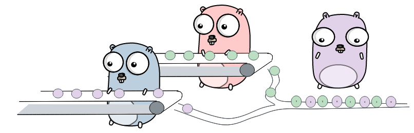

Goroutines

Go Concurrency |
|  |
Gregory Vinčić |
Sir Charles Antony Richard Hoare (Tony Hoare). Born 1934 in Sri Lanka, studied at Oxford and in Moscow. His research spanned program correctness, sorting and programming languages. His work is freely accessible online and the Go channel construct is his concept. |

package sync // import "sync" Package sync provides basic synchronization primitives such as mutual exclusion locks. Other than the Once and WaitGroup types, most are intended for use by low-level library routines. Higher-level synchronization is better done via channels and communication. Values containing the types defined in this package should not be copied. func OnceFunc(f func()) func() func OnceValue[T any](f func() T) func() T func OnceValues[T1, T2 any](f func() (T1, T2)) func() (T1, T2) type Cond struct{ ... } func NewCond(l Locker) *Cond type Locker interface{ ... } type Map struct{ ... } type Mutex struct{ ... } type Once struct{ ... } type Pool struct{ ... } type RWMutex struct{ ... } type WaitGroup struct{ ... }pkg.go.dev/sync
package context ... Programs that use Contexts should follow these rules Do not store Contexts inside a struct type; instead, pass a Context explicitly to each function that needs it. The Context should be the first parameter, typically named ctx: func DoSomething(ctx context.Context, arg Arg) error { // ... use ctx ... } Do not pass a nil Context, even if a function permits it. Pass context.TODO if you are unsure about which Context to use. Use context Values only for request-scoped data that transits processes and APIs, not for passing optional parameters to functions.
var Canceled = errors.New("context canceled")
var DeadlineExceeded error = deadlineExceededError{}
func AfterFunc(ctx Context, f func()) (stop func() bool)
func Cause(c Context) error
func WithCancel(parent Context) (ctx Context, cancel CancelFunc)
func WithCancelCause(parent Context) (ctx Context, cancel CancelCauseFunc)
func WithDeadline(parent Context, d time.Time) (Context, CancelFunc)
func WithDeadlineCause(parent Context, d time.Time, cause error) (Context, CancelFunc)
func WithTimeout(parent Context, timeout time.Duration) (Context, CancelFunc)
func WithTimeoutCause(parent Context, timeout time.Duration, cause error) (Context, CancelFunc)
type CancelCauseFunc func(cause error)
type CancelFunc func()
type Context interface{ ... }
func Background() Context
func TODO() Context
func WithValue(parent Context, key, val any) Context
func WithoutCancel(parent Context) Context
pkg.go.dev/context | $ go test -bench=BenchmarkX -v |
- package main
- import (
- "net/http"
- )
- // Problem defines the thing that needs to be solved
- type Problem interface {
- // Solve returns an error if the given algorithm does not solve
- // the problem.
- Solve(Algorithm) error
- }
- // Algorithm is any func that takes some work and returns it's result.
- // The validity of the result must be verified outside.
- type Algorithm func(work []*http.Request) (result []*http.Response)
| |
Each algorithm in these examples is tested like this
- const Letters = "0 1 2 3 4 5 6 7 8 9 a b c d e f"
- func BenchmarkAlg01(b *testing.B) {
- // setup problem outside the loop
- problem := NewLetterChallenge(Letters)
- srv := problem.Server()
- defer srv.Close()
- b.ResetTimer()
- for i := 0; i < b.N; i++ {
- if err := problem.Solve(Alg01); err != nil {
- b.Fatal(err)
- }
- }
- }
Simple implementation though very low performance
| $ go test -benchmem -bench=BenchmarkAlg01 |
| $ go test -benchmem -bench=BenchmarkAlg02 Why does it fail? |
| $ go test -benchmem -bench=BenchmarkAlg03 You might get a different result; why does it still fail? and can the tooling help identify the problem, try $ go test -benchmem -bench=BenchmarkAlg03 -race -count 1 |
| $ go test -benchmem -bench=BenchmarkAlg04 Why does it fail? |
| $ go test -benchmem -bench=BenchmarkAlg05 |
Comparing the sequential working algorithm to the working concurrent one, tests reveal a substantial improvement.
$ go test -benchmem -bench="(Alg01|Alg05)$"
- goos: linux
- goarch: amd64
- pkg: github.com/preferit/main
- cpu: Intel(R) Xeon(R) E-2288G CPU @ 3.70GHz
- BenchmarkAlg1-16 6 175609134 ns/op 276349 B/op 1976 allocs/op
- BenchmarkAlg5-16 87 13308022 ns/op 292652 B/op 2021 allocs/op
- PASS
- ok github.com/preferit/main 2.413s
| $ go test -benchmem -bench=BenchmarkAlg06 |
| $ go test -benchmem -bench=BenchmarkAlg07 There is still a bug in this code, do you see it? |
| $ go test -benchmem -bench=BenchmarkAlg08 |
| $ go test -benchmem -bench=BenchmarkAlg09 |
| $ go test -benchmem -bench=BenchmarkAlg10 |
In this example using channels and sync package primitives seem to yield more or less the same result. There performance boost would be to try and minimize number of allocations. But that is out of scope for this talk.
$ go test -benchmem -bench="(Alg01|Alg05|Alg08)$"
- goos: linux
- goarch: amd64
- pkg: github.com/preferit/main
- cpu: Intel(R) Xeon(R) E-2288G CPU @ 3.70GHz
- BenchmarkAlg1-16 6 175310048 ns/op 277350 B/op 1982 allocs/op
- BenchmarkAlg5-16 88 13202327 ns/op 293016 B/op 2026 allocs/op
- BenchmarkAlg8-16 91 13449404 ns/op 289586 B/op 2019 allocs/op
- PASS
- ok github.com/preferit/main 3.652s